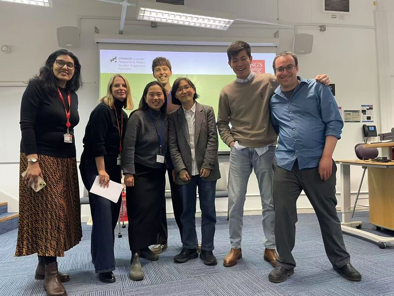
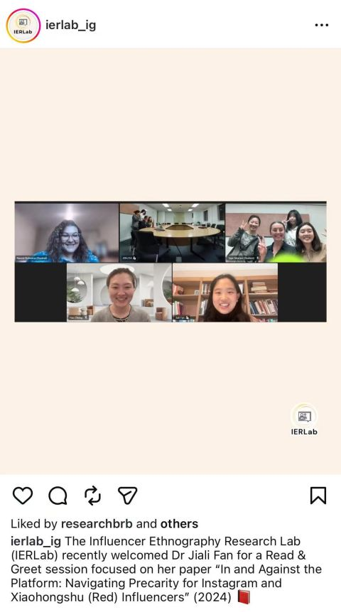
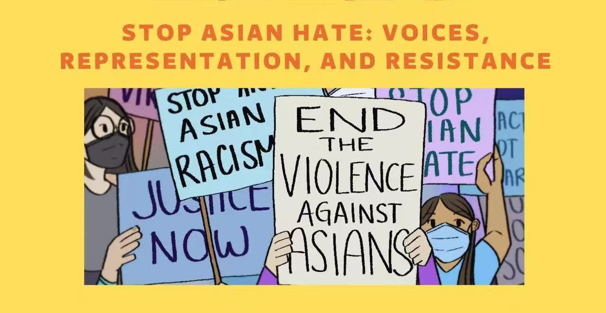

King’s College London · 27 February 2026
Counter-Research Symposium
Co-organised as co-founder of CRIMSON, bringing together researchers to discuss critical and alternative approaches to media research.

King’s College London · 27 February 2026
Co-organised as co-founder of CRIMSON, bringing together researchers to discuss critical and alternative approaches to media research.

Curtin University · 2 March 2026
Invited talk and Read & Greet session with the Influencer Ethnography Research Lab (IERLab), discussing my research on influencer cultures and platform precarity.

Hughes Hall, University of Cambridge · 2022
Co-organiser of a workshop bringing together discussion around anti-Asian racism, representation, voice and resistance.
The Guardian · 2025
Americans flock to Chinese TikTok alternative RedNote: ‘We have the same struggles’
Interview and commentary on RedNote, TikTok migration and cross-cultural interactions on Chinese social media.
Read article →Trouw · 2025
Amerikaanse TikTokkers stappen massaal over op Chinese concurrenten
Interview and commentary on American TikTok users migrating to Chinese social media platforms.
Read article →IFA Media · Forthcoming
The Asian Guilt Code
Interview contributor to a forthcoming documentary produced by IFA Media.
Forthcoming